Mission Control v3 — capture gallery
capturedAt 2026-10-11T14:33:40.515Z · revision b9f262a1b5ce3713993effa32953463032468700 (dirty tree) ·
bundle 1264475 bytes · sha256 66768e504907499f…
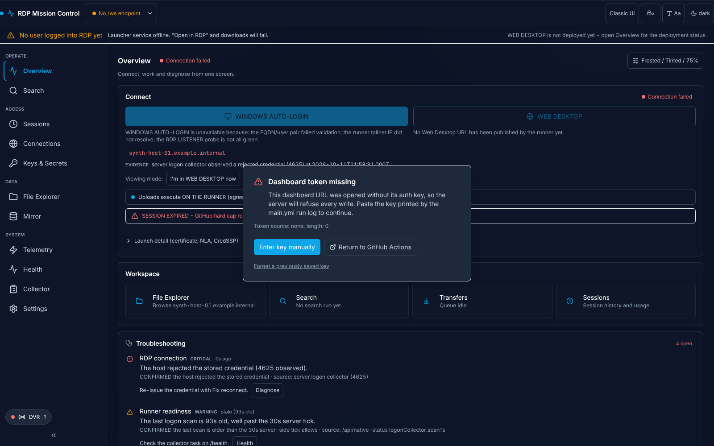
00-token-gate — #/ @ Windows desktopheaders: overview-header nav links: 11 · glass level counts: {"sheet":1,"overlap":4,"card":10,"row":4} · overflow: 0px
01-overview — #/ @ Windows desktopheaders: overview-header nav links: 11 · glass level counts: {"sheet":1,"overlap":4,"card":10,"row":4} · overflow: 0px
02-overview-troubleshooting — #/ @ Windows desktopheaders: overview-header nav links: 11 · glass level counts: {"sheet":1,"overlap":4,"card":10,"row":4} · overflow: 0px
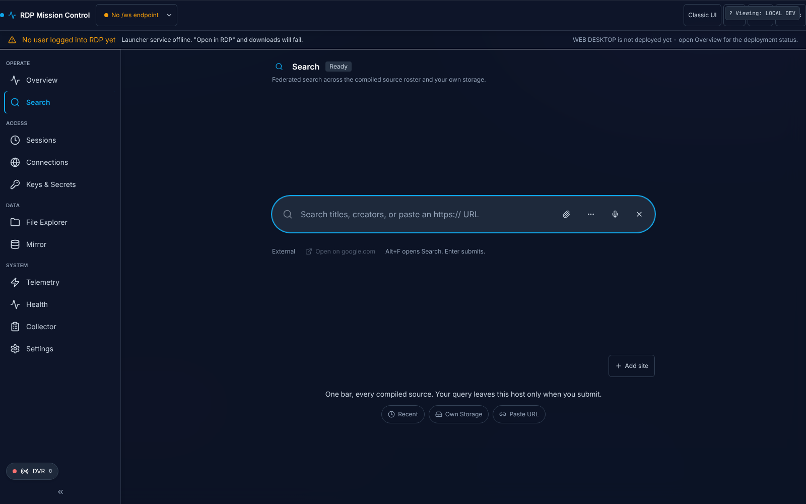
03-search — #/search @ Windows desktopheaders: page-search nav links: 11 · glass level counts: {"sheet":1,"overlap":4} · overflow: 0px
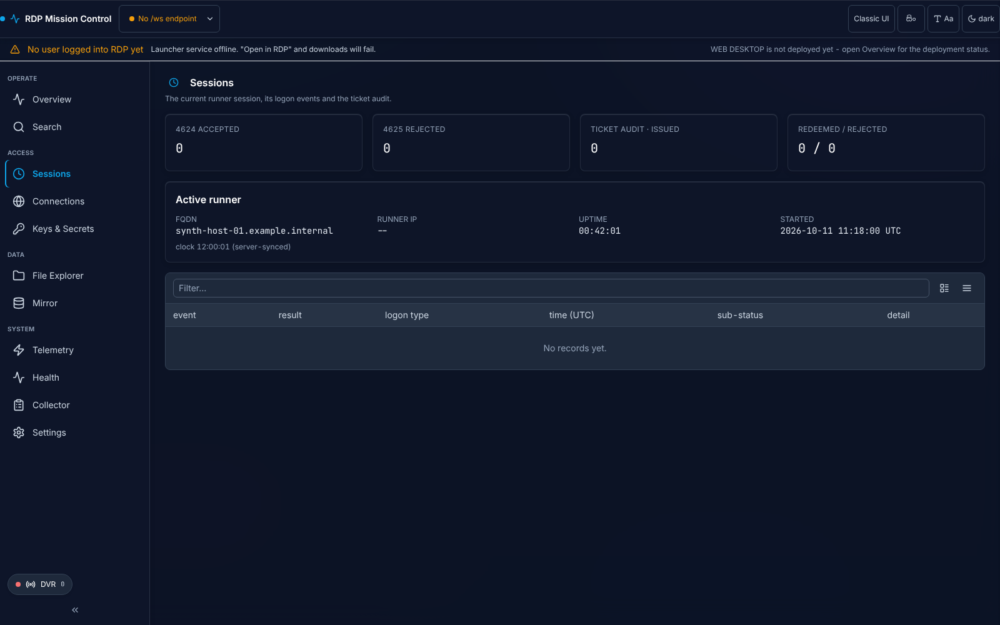
04-sessions — #/sessions @ Windows desktopheaders: page-sessions nav links: 11 · glass level counts: {"sheet":1,"overlap":4,"card":5} · overflow: 0px
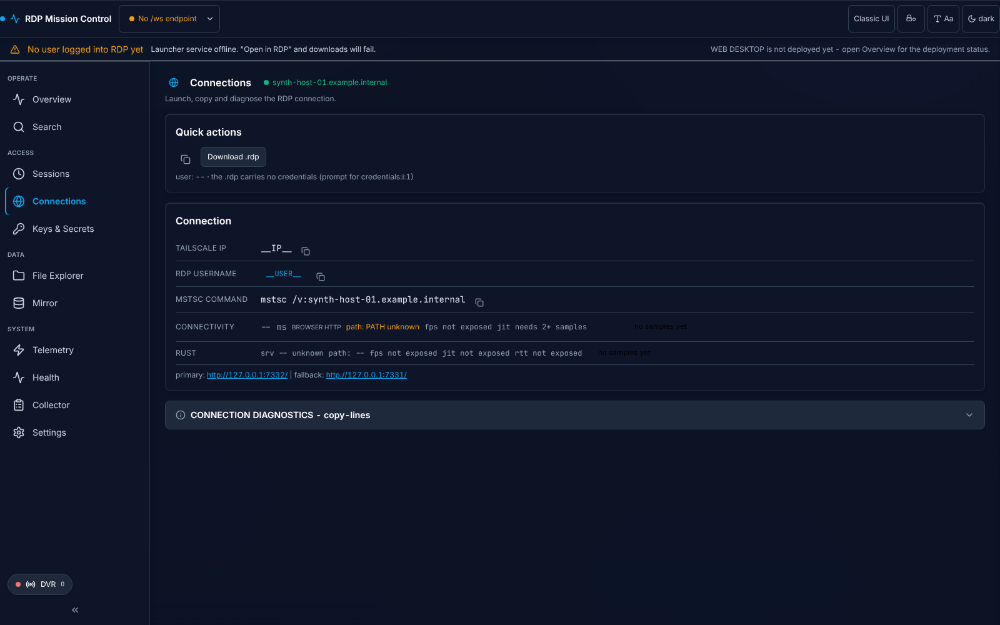
05-connections — #/connections @ Windows desktopheaders: page-connections nav links: 11 · glass level counts: {"sheet":1,"overlap":4,"card":2} · overflow: 0px
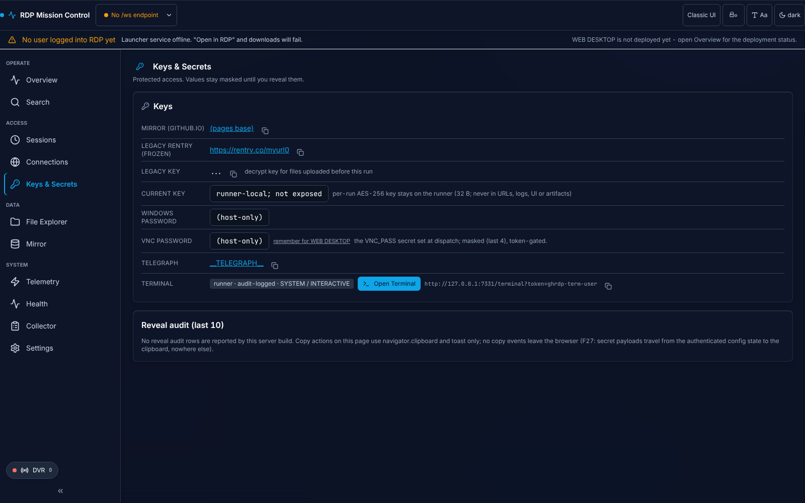
06-keys — #/keys @ Windows desktopheaders: page-keys nav links: 11 · glass level counts: {"sheet":1,"overlap":4,"card":2} · overflow: 0px
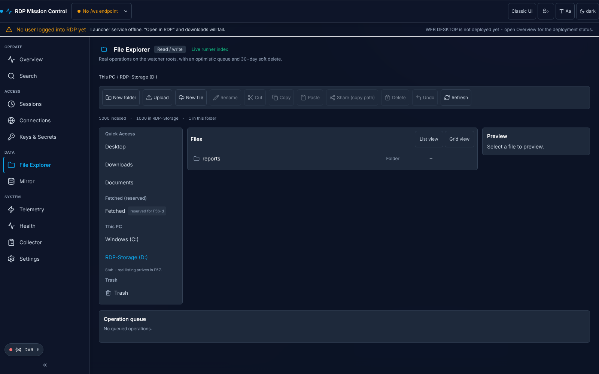
07-files — #/files @ Windows desktopheaders: page-files nav links: 11 · glass level counts: {"sheet":1,"overlap":4} · overflow: 0px
files provenance: live read of the synthetic /api/fx/list index
files counts: 5000 indexed·1000 in RDP-Storage·1 in this folder
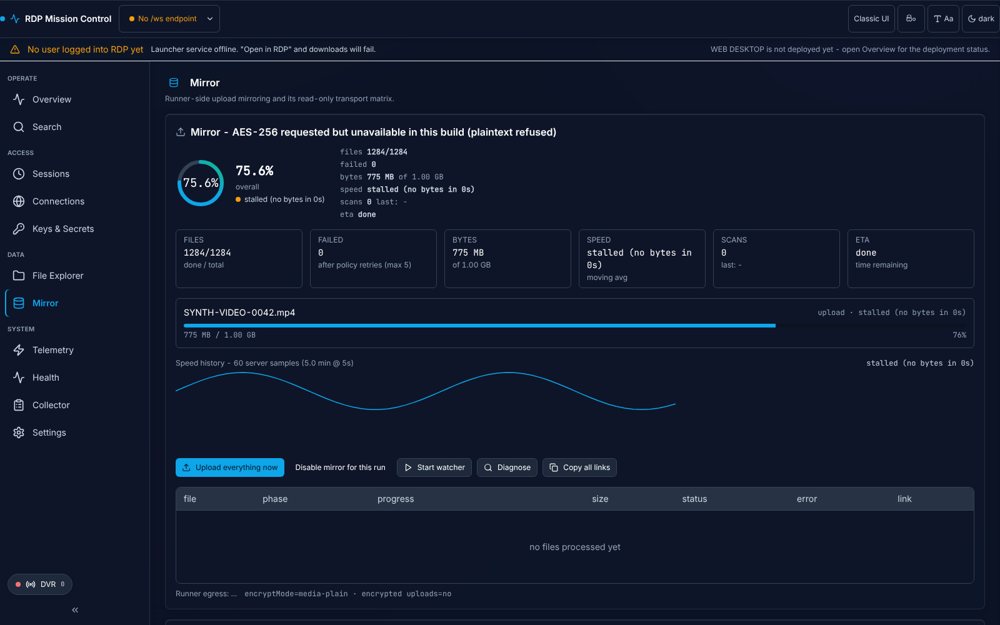
08-mirror — #/mirror @ Windows desktopheaders: page-mirror nav links: 11 · glass level counts: {"sheet":1,"overlap":4,"card":4} · overflow: 0px
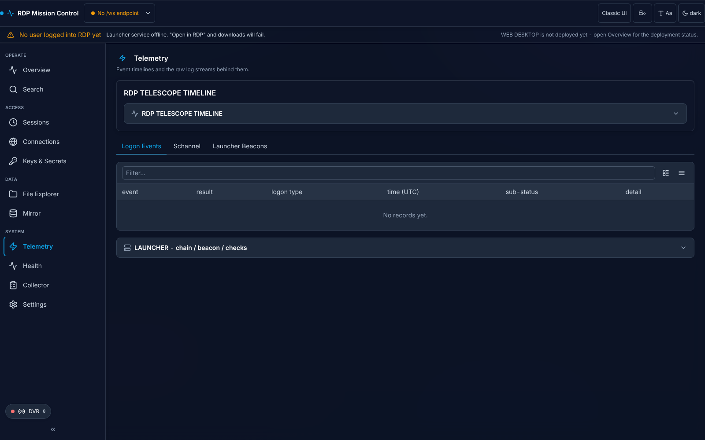
09-telemetry — #/telemetry @ Windows desktopheaders: page-telemetry nav links: 11 · glass level counts: {"sheet":1,"overlap":4,"card":1} · overflow: 0px
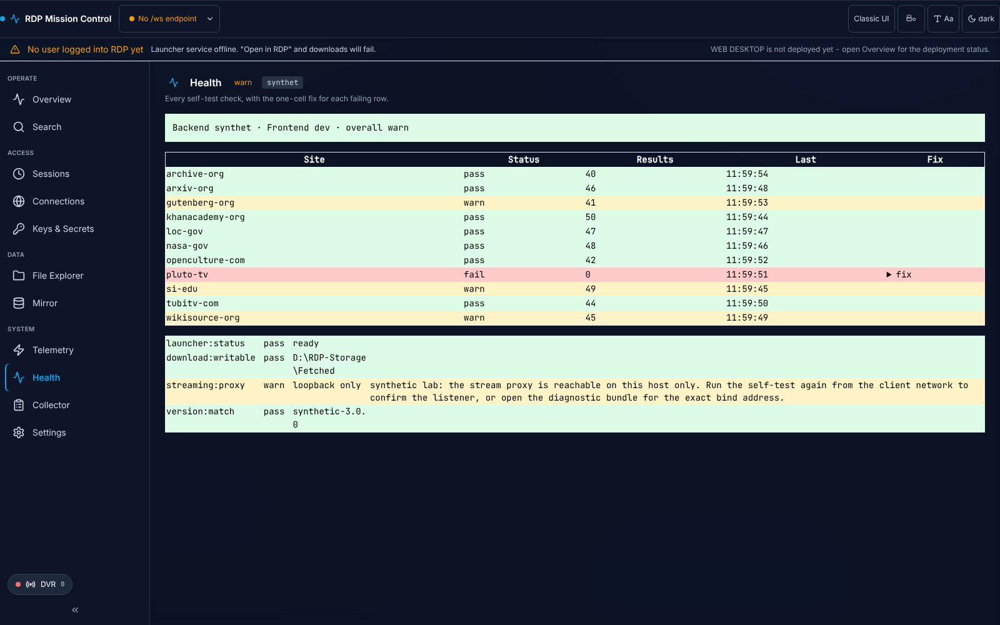
10-health — #/health @ Windows desktopheaders: page-health nav links: 11 · glass level counts: {"sheet":1,"overlap":4} · overflow: 0px
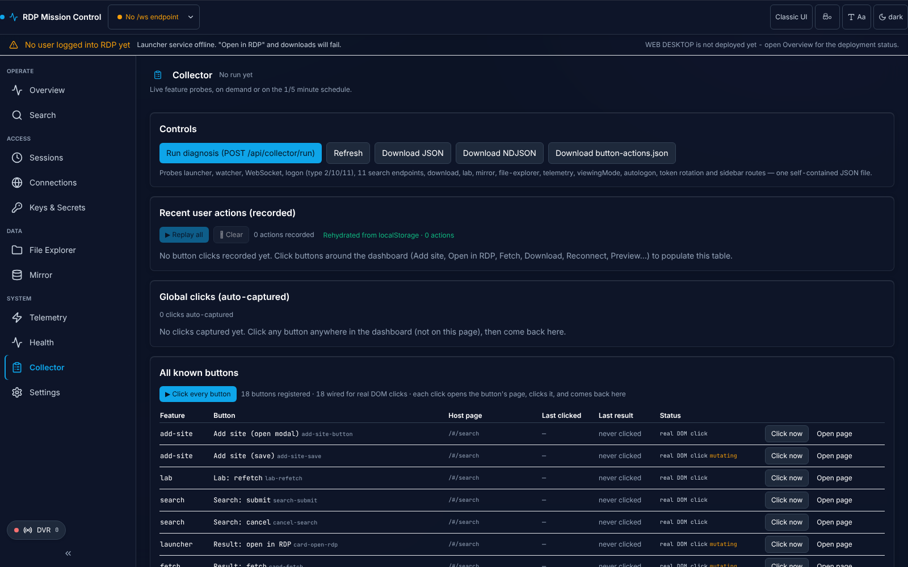
11-collector — #/collector @ Windows desktopheaders: page-collector nav links: 11 · glass level counts: {"sheet":1,"overlap":4,"card":6} · overflow: 0px
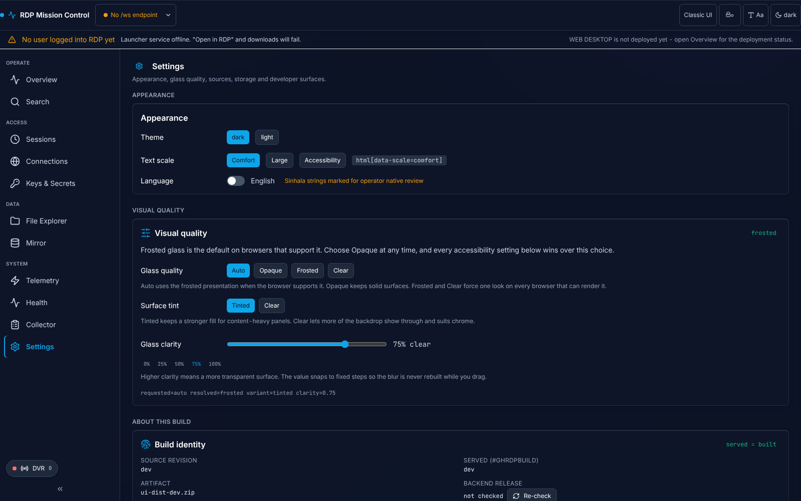
12-settings — #/settings @ Windows desktopheaders: page-settings nav links: 11 · glass level counts: {"sheet":1,"overlap":4,"card":9} · overflow: 0px
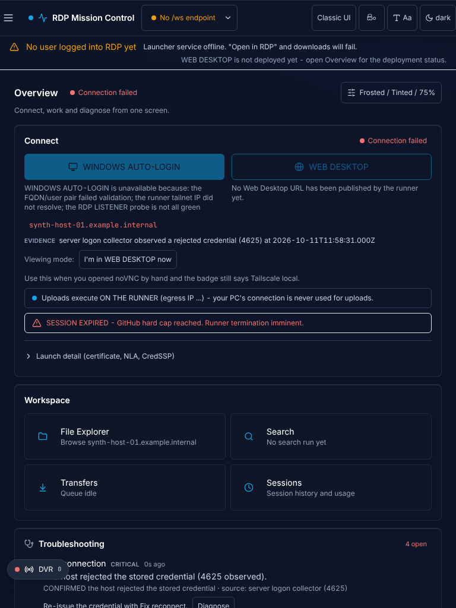
13-overview-tablet — #/ @ iPad portraitheaders: overview-header nav links: 11 · glass level counts: {"sheet":1,"overlap":4,"card":10,"row":4} · overflow: 0px
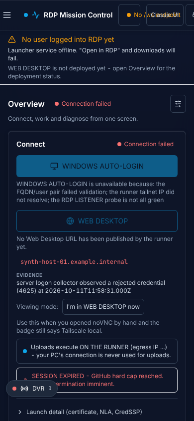
14-overview-phone — #/ @ iPhone 14 (viewport emulation)headers: overview-header nav links: 11 · glass level counts: {"sheet":1,"overlap":4,"card":10,"row":4} · overflow: 0px
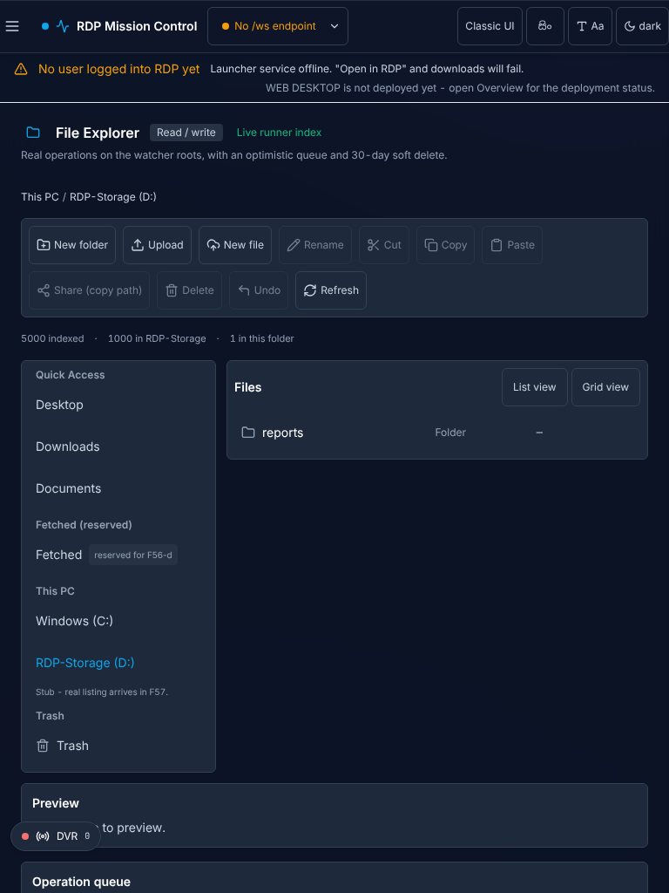
15-files-tablet — #/files @ iPad portraitheaders: page-files nav links: 11 · glass level counts: {"sheet":1,"overlap":4} · overflow: 0px
files provenance: live read of the synthetic /api/fx/list index
files counts: 5000 indexed·1000 in RDP-Storage·1 in this folder
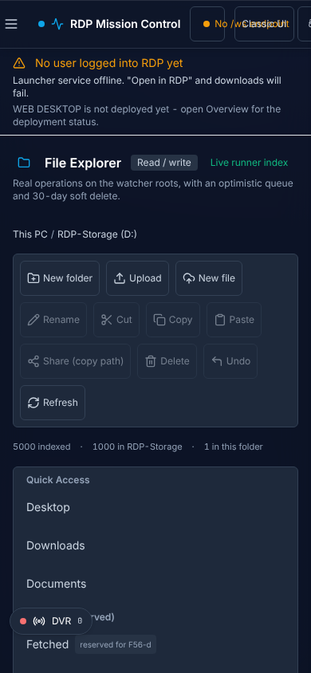
16-files-phone — #/files @ iPhone 14 (viewport emulation)headers: page-files nav links: 11 · glass level counts: {"sheet":1,"overlap":4} · overflow: 0px
files provenance: live read of the synthetic /api/fx/list index
files counts: 5000 indexed·1000 in RDP-Storage·1 in this folder
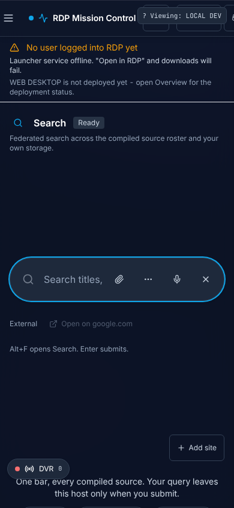
17-search-phone — #/search @ iPhone 14 (viewport emulation)headers: page-search nav links: 11 · glass level counts: {"sheet":1,"overlap":4} · overflow: 0px
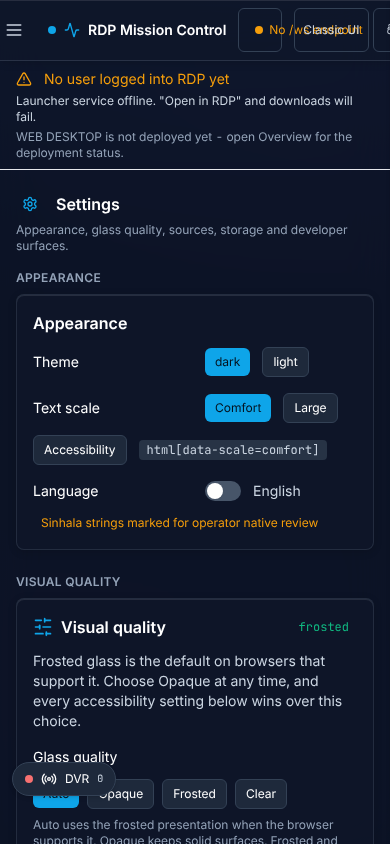
18-settings-phone — #/settings @ iPhone 14 (viewport emulation)headers: page-settings nav links: 11 · glass level counts: {"sheet":1,"overlap":4,"card":9} · overflow: 0px
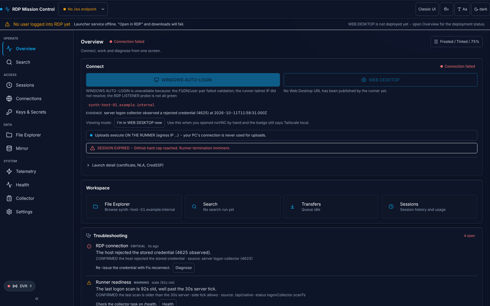
19-glass-tinted — #/ (frosted/0.75/tinted) @ Windows desktopheaders: none nav links: undefined · glass level counts: {} · overflow: undefinedpx
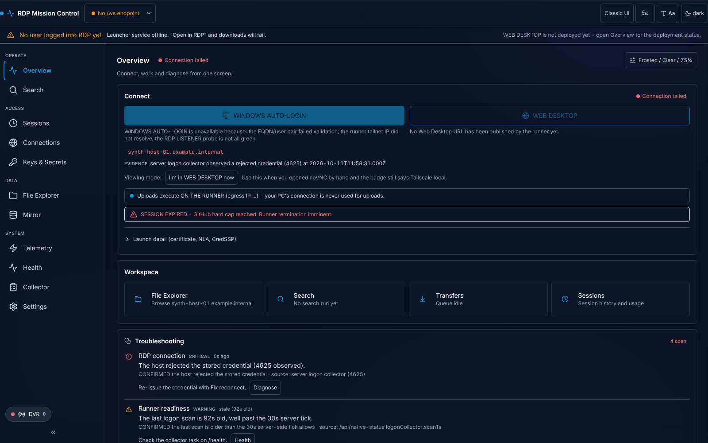
20-glass-clear — #/ (frosted/0.75/clear) @ Windows desktopheaders: none nav links: undefined · glass level counts: {} · overflow: undefinedpx